Ville touristique balnéaire, une richesse artisanale unique et une production agricole
Le Gouvernorat de Nabeul (ou Cap Bon) est l'une des régions les plus célèbres et les plus visitées de Tunisie, située à l'extrémité nord-est du pays. C'est une péninsule réputée pour ses plages superbes, son agriculture florissante (agrumes et vignobles) et son riche artisanat, notamment la poterie.
Nabeul bénéficie d'un emplacement stratégique, s'avançant dans la mer Méditerranée et bordé par les eaux sur trois côtés (le golfe de Tunis au nord et à l'est, et le golfe d'Hammamet au sud-est). Elle est située à environ 60 kilomètres au sud-est de Tunis
La région, connue dans l'Antiquité sous le nom de Neapolis (Nouvelle Ville) fondée par les Grecs, possède une histoire riche qui remonte à la période punique. Elle fut un centre commercial important. Plus tard, sous la domination romaine, elle a prospéré. L'histoire de Nabeul est également marquée par l'arrivée massive de réfugiés andalous au XVIIe siècle, qui ont apporté avec eux leur savoir-faire en matière d'artisanat, d'agriculture (notamment la culture des agrumes et l'irrigation) et de poterie, façonnant ainsi l'identité culturelle de la région.
C'est un site unique et un joyau de l'archéologie punique, classé au patrimoine mondial de l'UNESCO. La ville a été abandonnée avant la conquête romaine, préservant ainsi les vestiges intacts d'une cité carthaginoise typique avec ses maisons, temples et remparts. Le musée sur place présente des artefacts rares, dont des bijoux puniques.
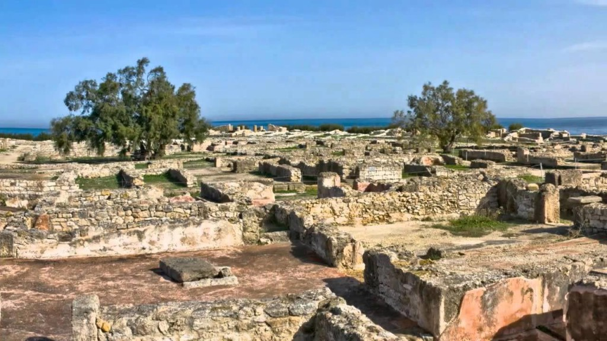
Réputée pour être l'une des plus belles plages de Tunisie, et parfois classée mondialement pour la transparence de son eau cristalline et son sable blanc. C'est un lieu idéal pour la baignade et la détente.
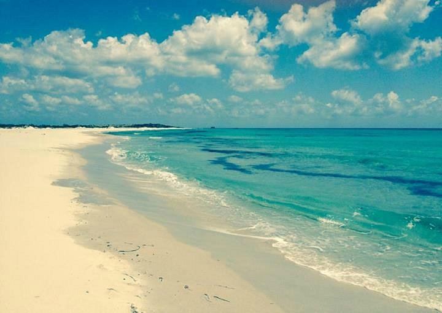
une station balnéaire très prisée, connue pour ses plages magnifiques, sa médina historique avec ses remparts, et sa vie nocturne animée. La ville offre également des activités culturelles, notamment le Festival International de Hammamet.
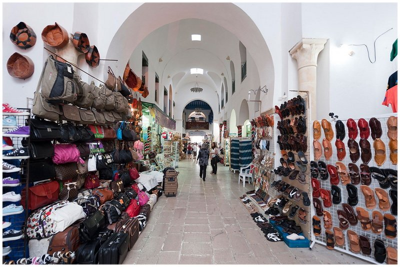
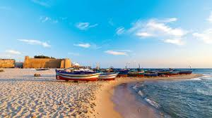
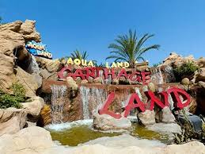
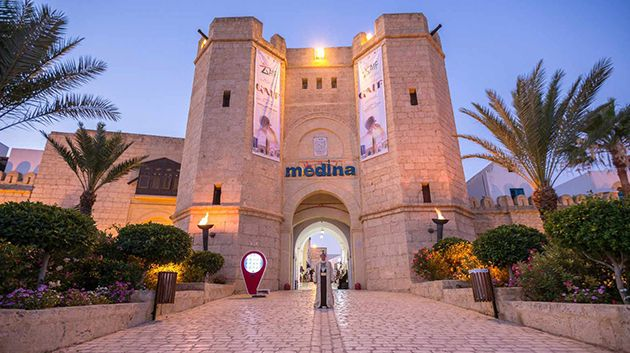
Cette forteresse médiévale, la plus grande et l'une des mieux conservées de Tunisie, est perchée sur une colline et domine la ville. Elle offre une vue panoramique spectaculaire sur le port de pêche et la mer Méditerranée.
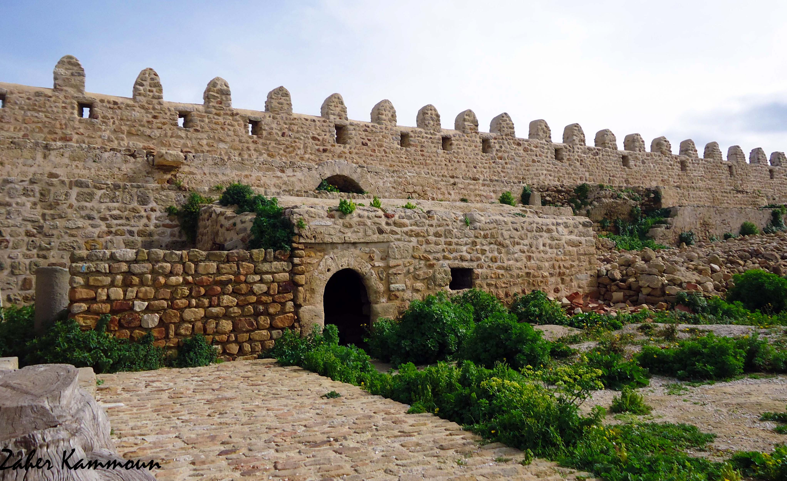
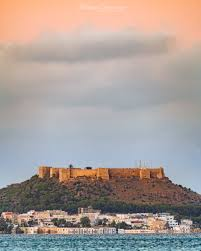
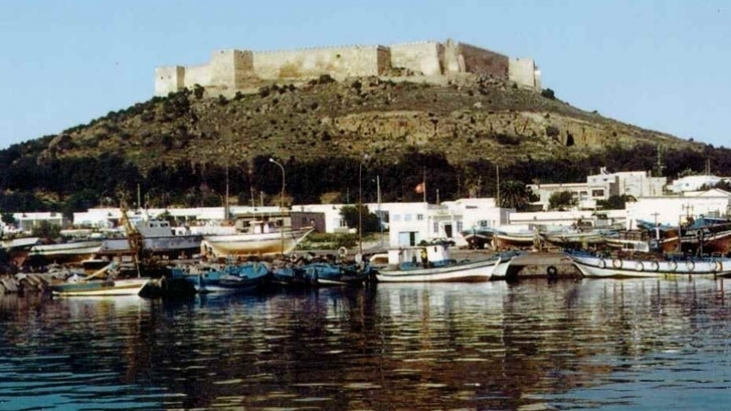
Une charmante petite ville thermale nichée entre mer et montagne. Vous pouvez profiter de ses sources d'eau chaude naturelles qui se jettent dans la mer.
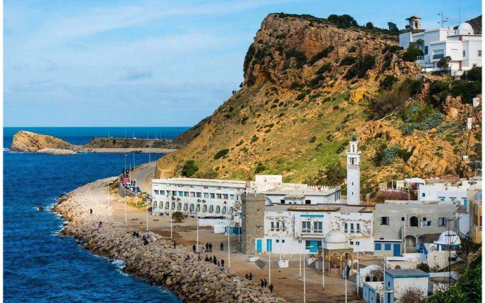
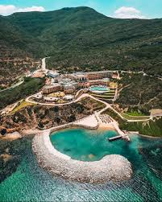
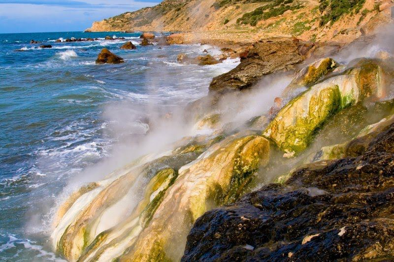
Situées à la pointe nord du Cap Bon, ces plages offrent des paysages sauvages et préservés, avec de grandes étendues de sable, des falaises rocheuses et des criques. La région est aussi connue pour ses grottes (anciennes carrières romaines) et l'observation des oiseaux migrateurs.
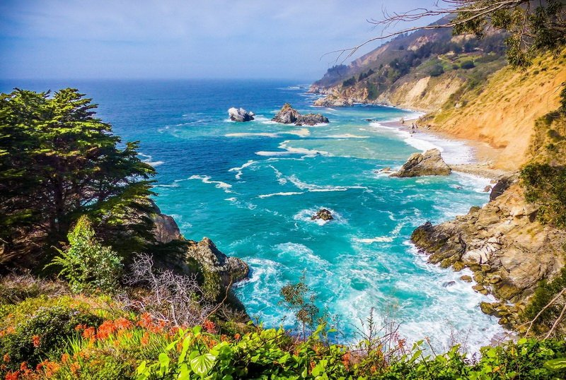